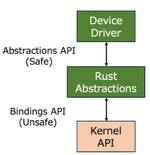
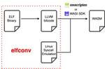

企業テックブログRSS
フィード
人気フィード
ブログ一覧
nttlabs - Medium
https://medium.com/nttlabs?source=rss----74f667786e9f---4
NTT Open Source.
フィード

Rustで作るLinuxデバイスドライバ
82
nttlabs - Medium
2日前

elfconv: an experimental AOT compiler that translates Linux/AArch64 ELF binary to WebAssembly.
2
nttlabs - Medium
4日前
vscode-container-wasm: An Extension of VSCode on Browser for Running Containers Within Your Browser
nttlabs - Medium
1ヶ月前
Lightweight Formal Methods for BGP
nttlabs - Medium
1ヶ月前
[DockerCon 2023] Reproducible builds with BuildKit for software supply chain security
nttlabs - Medium
3ヶ月前
The internals and the latest trends of container runtimes (2023)
nttlabs - Medium
7ヶ月前
Bit-for-bit reproducible builds with Dockerfile
nttlabs - Medium
10ヶ月前
container2wasm Converter: Running Linux-Based Containers on WASM and Browser
nttlabs - Medium
10ヶ月前
TLSが難しい？RustとLinuxカーネルで実装しよう！
nttlabs - Medium
1年前
Released nerdctl v1.0
nttlabs - Medium
1年前